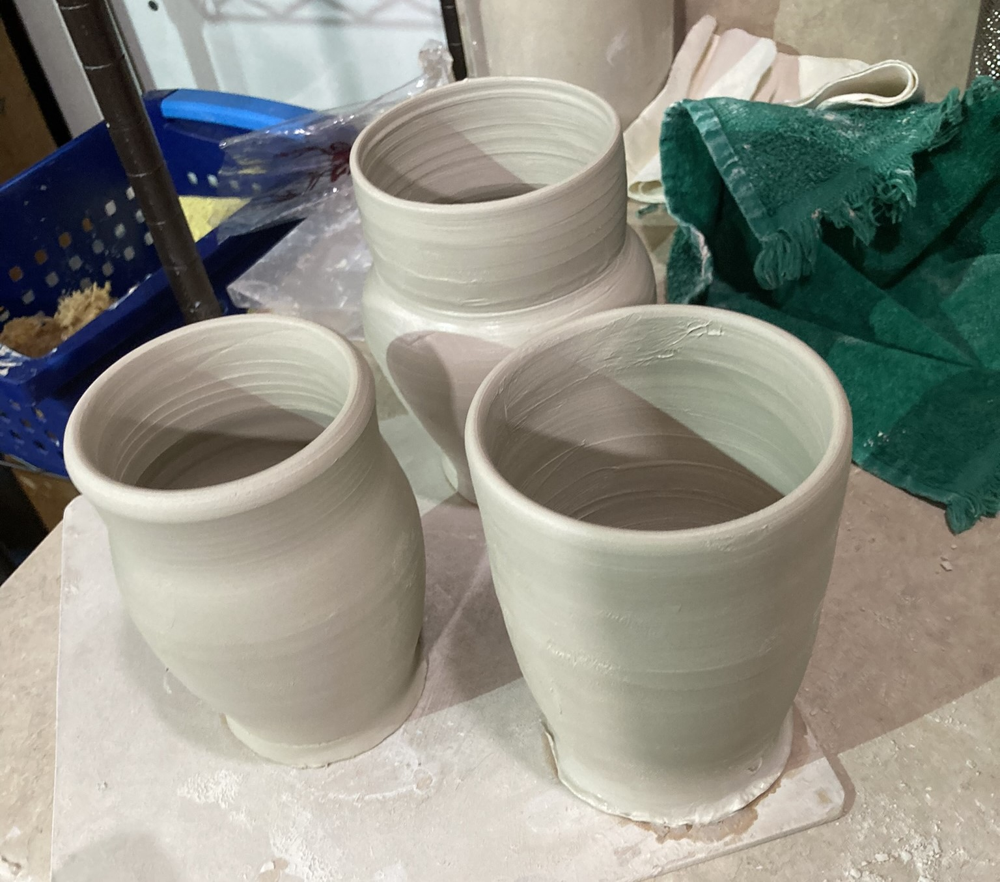

Wheel throwing is a method of creating ceramics using a pottery wheel. It is often sought after due to the speed at which you can create ceramic pots, but elusive due to the steep learning curve. However, following some basic principles makes getting started on the wheel far easier.
Throwing doesn’t start at the wheel. Before you can get to the wheel, you have to set yourself up. There are a few different characteristics that separate different types of clay from each other, such as:
To start off, it's best to have a soft clay with high plasticity and low grog. This makes the clay overall easier to work with for beginners and the throwing process less frustrating. One such clay that is good for beginners would be Laguna’s B-mix. This isn’t the only one though, and any clay that fits these criteria would work. If you go to a ceramic supply store and ask, they’ll often have recommendations for beginners as well.
In addition to getting the clay, you also have to get some tools to help you throw. At the start, it's important to get familiar with what these tools are and their purposes. The tools you’d need to start are given in the table below.
| Name | Purpose | Notes |
|---|---|---|
| Apron | Prevent a mess on your clothes | Make sure that the apron is long and that you tie the apron properly. In some wheel models, apron strings can get caught in the spinning mechanism. |
| Bucket | Hold water | The bucket should be small enough to fit on the tray of your wheel. Make sure that your water is a temperature that feels nice to touch. Too cold of water and you’ll freeze your fingers. |
| Sponge | Clean up, help with manipulating clay | The sponge should be able to fit comfortably in your hand. Optionally you could have a separate, larger sponge for cleaning up. |
| Needle Tool | Cut off pieces of clay, check clay thickness | Always be careful with the tip of the needle tools, it is easy to poke yourself through the clay. |
| Rib | Manipulating clay | These come in various materials such as metal, wood and rubber. I recommend having a wood rib and optionally a thin metal one that is flexible. Use the wooden rib to remove large bumps at the bottom of your clay |
At this step, we’re finally at the wheel. Note that this part of the tutorial is assuming that your dominant hand is your right hand. You should have your tools all in place in front of you, apron on, bucket full of water and clay wedged. First things first, you have to get the clay onto the wheelhead. Approximate the center and then with some force plop it on there. After that, you can take a finger and go around, further attaching the clay to the wheel. Take some water and drench the ball of clay, making sure that the surface is shiny. Push down on the pedal and start feeling the clay. Feel what it’s like to go at different speeds and how the clay resists against your hand. Once you’ve gotten a feel for touching it, make sure the surface is still shiny. COP stands for center, open, and pull, it’s the steps you have to go through on the wheel to get a finished piece.
This is the first hurdle many beginners run into. Getting a piece of clay centered enough is not an easy task, but it should be easier if you have a softer clay. The key is to be steady and controlled. Put your left hand on the side of the clay, lightly wrapping the fingers around the clay. Next, place your right hand on top facing your left hand, your thumbs should be touching and perpendicular to each other. After that, the name of the game is pressure. Apply some pressure and hold your hands there. Make sure that you have your arms anchored, using your body weight to shape the clay. This step is not a test of strength, it's a test of leverage. You’ll know the clay is centered when there is no wobble in it, almost looking like it's not moving.
Next, we have to make a hole in the middle of the clay. Using a finger, apply pressure to the top of the clay and slowly bring it inwards until there is a button of sorts in the middle of the clay. Then, with your thumb press on the “button” and dig down into the clay. Place your left hand in front of you on the wall of clay, and your other hand on top of it. With your fingers, reach over to the hole you made in the center of the clay and use them to widen the hole. Stop the wheel and press the needle tool down until it hits the wheelhead. Then, put your finger where the floor of the pot is. Taking out the needle tool, you can see the thickness of the base. Most commonly, you’ll need to remove more clay from the bottom. Repeat this process until the base is about as thick as your pinky.
Though centering is often the first block, pulling is the hardest part of throwing on the wheel. This is because it requires large amounts of consistency, the kind that comes with just practicing. To start, wet your sponge and wring out excess water. Position your sponge in your right hand, holding it in a way that you can use your pointer and middle fingers to apply pressure. Put your left hand inside the pot at the bottom and the sponge on the outside. Your hands should be in about the same place, just one on the inside and one on the outside. Note that you should be positioned on the right side of the pot. Now, press your left hand into your right hand and start slowly moving your hands upwards. You want your hands to be moving at the same time, always at the same pace and with generally the same pressure. It often helps to have your hands touching eachother, but depending on the height of your cylinder, this may not be possible. Once you reach the top, carefully release sideways. Repeat this process untill you think the walls are about the width of your pinky.

When you get your first few pots, there's often a want to keep every one of them, but I would suggest you don't. Instead, cut the pot in half and look at how even (or uneven) your walls are. They should be about the thickness of your pinky, but above all you're looking for consistency. Your first pot will not be even, and that's fine. It's something that you can only get through practiciing.
For a visual of what all these steps may look like, here is a video about throwing. Note that the exact way someone throws is highly personal, though most follow a similar structure. Every potter has a different way they do it and therefore a different way that they’ll teach it. That doesn’t mean that one way is wrong or right, just that everyone has different preferences. It’s a good idea to try out these different methods of throwing and see which one you like best.